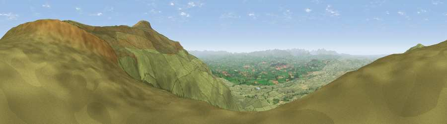

Viewpoint near Ousby
#2249 in England · top 3% of its area beats it · near OusbyThe view, rendered

A 360° render of this exact spot computed from the terrain model, tree cover and land cover — summer colours, afternoon light, calibrated against photographs of famous viewpoints. Real trees, hedges and buildings will differ in detail.
The panorama
Grey silhouette: terrain skyline in each direction (720 bearings, Earth curvature and refraction included). Dashed green: skyline with trees (+15 m) and buildings (+8 m) as obstacles. Blue strip: how far the ground is visible on each bearing.
Where the view opens
Wedge length = distance to the farthest visible ground on that bearing (vegetation-aware). Rings at 10, 25 and 50 km.
What fills the view
92% grassland · 4% cropland · 4% woodland
Angular shares of the visible panorama (visual magnitude), not map area. Landscape diversity 0.15 (0–1 Shannon).
Key numbers
More beautiful places nearby
The staircase of upgrades: each row has a higher view potential than everything closer. Driving times are estimates from straight-line distance, calibrated against real road routing — check an actual route before setting out.
| Place | Direction | Drive | Score |
|---|---|---|---|
| Viewpoint near Ousby | W · 2 km | ~4 min | 76.2 |
| Viewpoint near Melmerby | NNW · 3 km | ~6 min | 76.8 |
| Cross Fell | ESE · 3 km | ~7 min | 78.7 |
| Viewpoint near Plumpton | W · 15 km | ~27 min | 78.9 |
| Barrock Fell | WNW · 23 km | ~37 min | 81.1 |
| Viewpoint near Watermillock | SW · 25 km | ~40 min | 82.6 |
| Viewpoint near Watermillock | SW · 25 km | ~41 min | 83.5 |
| Viewpoint near Legburthwaite | WSW · 38 km | ~57 min | 83.8 |
54.71426, -2.52733 · source: screening · position refined by local search. Computed location — check access rights before visiting.